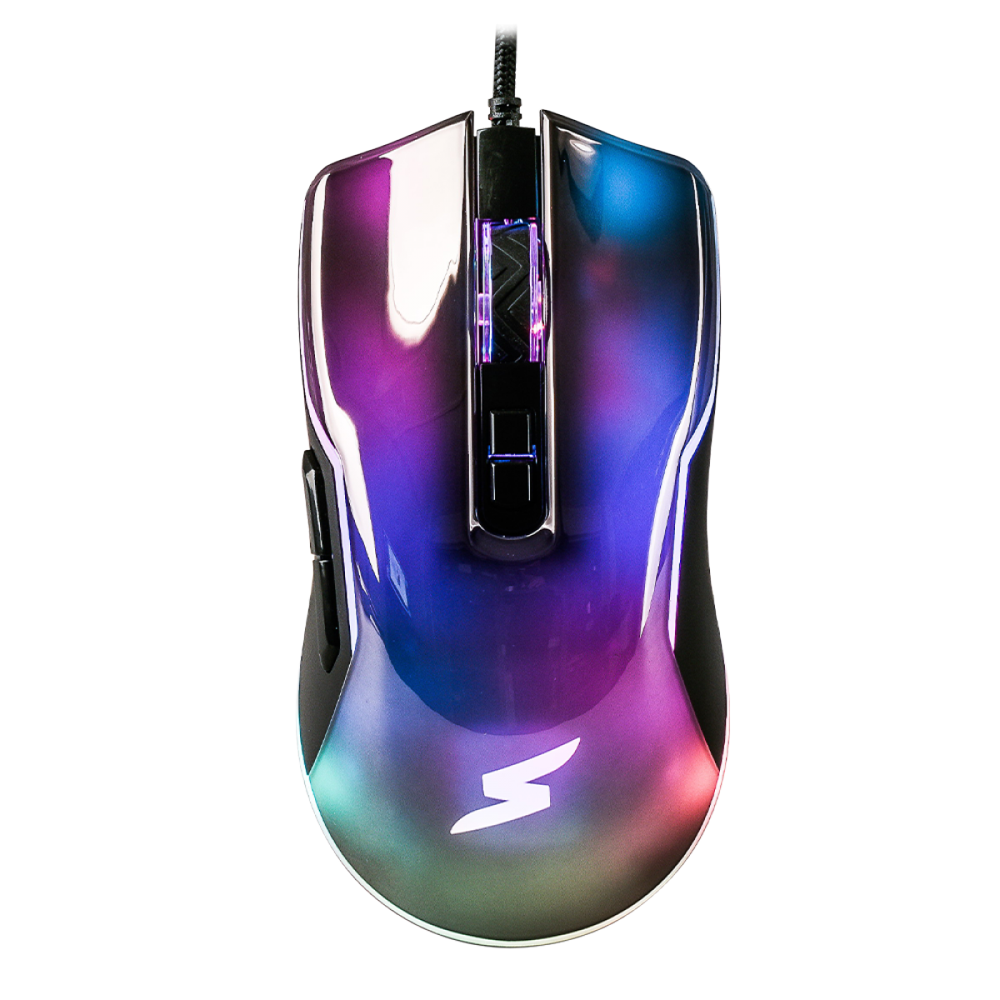

Catálogo de produtos
Foto
Código
Descrição
qtde em estoque
Valor unitario
1
Mouse Laser com fio dell
5
R$ 179,00

2
Mouse bluetooth dell
6
R$ 338,00
3
Mouse óptico usb preto 100
3
R$ 48,30
Descrição
Caracteristicas do Produto
Especificaçãoes
Sensor óptico preciso com 1.600 DPI permite que você trabalhe na maioria das superfícies
Configuração USB rápida e fácil com cabo de 1,5m
Design ambidestro, produzido para caber de forma natural e perfeita na palma da sua mão
Três botões integrados
Ampla compatibilidade: Windows e Mac
Avaliação do produto
Jose Aparecido
Muito Bom
Joaquim Jorge
Bom